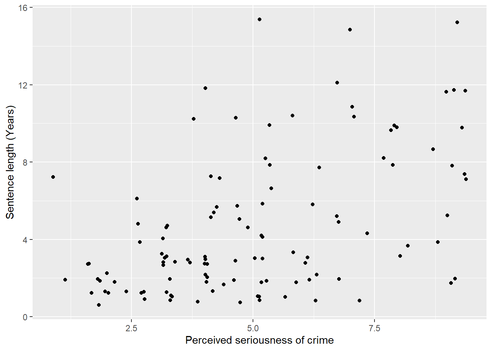
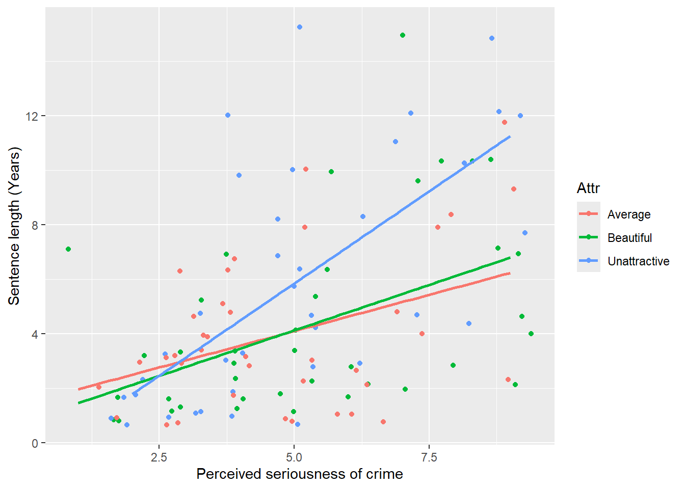
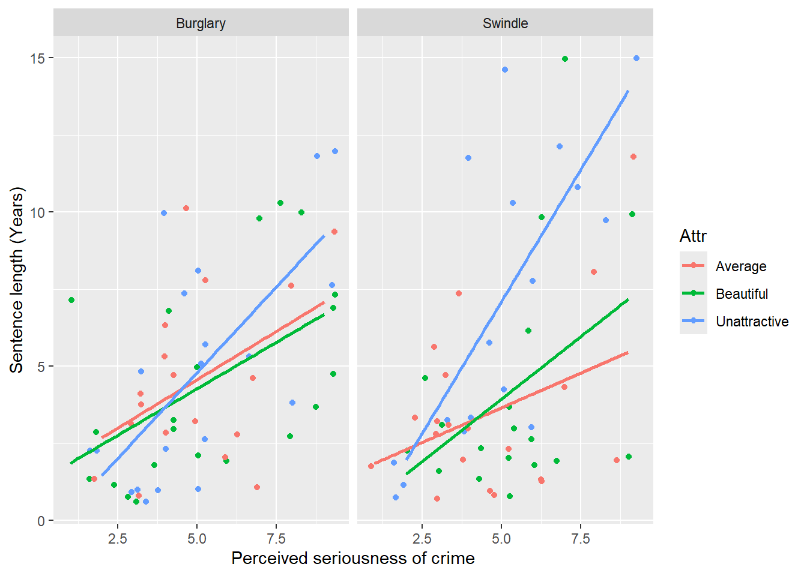

jury_data <- read_csv(here("data", "regression_2", "anova_mockjury.csv"))9 Regression continued
This section deals with some more advanced topics in ANOVAs and regression. It serves as a continuation to the first chapter on regression, and in particular focuses on multiple regressions. This chapter will cover the following:
- ANCOVA
- Hierarchical regressions
- Model selection
- Identifying and handling outliers
This module won’t cover continuous interactions because they are often considered under the topic of moderation - for which there will be a separate module.
Recall that the basic multiple regression looks something like this:
\[ y = \beta_0 + \beta_1x_1 +\beta_2x_2 + \epsilon_i \] As a reminder, the coefficients in this formula correspond to the following:
- \(\beta_1\) is the coefficient for predictor \(x_1\); i.e. as \(x_1\) increases by 1 unit, \(\hat y\) (the predicted y value) increases by \(\beta_1\) units, assuming \(x_2\) does not change
- \(\beta_2\) is the coefficient for predictor \(x_2\), and describes how \(\hat y\) changes assuming \(x_1\) does not change
- \(\epsilon_i\) is the error term, which we assume is normally distributed
We can expand this formula out to include \(n\) predictors, as follows:
\[ y = \beta_0 + \beta_1x_1 +\beta_2x_2 + ... \beta_nx_n + \epsilon_i \]
9.1 ANCOVAs
9.1.1 Introduction
ANCOVA stands for Analysis of Co-variance. Its basic definition is that it is an ANOVA, but with the inclusion of a covariate (or a variable we need to control for). The basic idea is that we are performing an ANOVA between our predictors and outcomes after adjusting our predictors (our model) by another variable.
Just like the ANOVA, ANCOVA is a fairly generic term that can refer to a multitude of analyses. In this book we’ll stick with ANOVAs relating to between-subjects predictors only.
9.1.2 Example
The following data comes from Plaster (1989). The dataset is described as below:
Male participants were shown a picture of one of three young women. Pilot work had indicated that the one woman was beautiful, another of average physical attractiveness, and the third unattractive. Participants rated the woman they saw on each of twelve attributes. These measures were used to check on the manipulation by the photo. Then the participants were told that the person in the photo had committed a Crime, and asked to rate the seriousness of the crime and recommend a prison sentence, in Years.
Our main questions are:
- Does the perceived attractiveness of the “defendant” (the women in the photo) influence the number of years the mock juror (the participant) sentence them for?
- How does this relationship change after controlling for the perceived seriousness of the crime?
Our dataset, jury_data, contains the following variables:
- Attr: The perceived attractiveness of the defendant (Beautiful, Average, Unattractive)
- Crime: The crime that was commited by the defendant (Burglary, Swindle)
- Serious: The perceived seriousness of the crime from 1-10
- Years: The number of years the participant sentenced the defendant for
9.1.3 One-way ANCOVA
To start us off, let’s begin with a simple one-way ANOVA between attractiveness and years. We can see this below.
jury_aov <- aov(Years ~ Attr, data = jury_data)
summary(jury_aov) Df Sum Sq Mean Sq F value Pr(>F)
Attr 2 70.9 35.47 2.77 0.067 .
Residuals 111 1421.3 12.80
---
Signif. codes: 0 '***' 0.001 '**' 0.01 '*' 0.05 '.' 0.1 ' ' 1eta_squared(jury_aov, alternative = "two.sided")For one-way between subjects designs, partial eta squared is equivalent
to eta squared. Returning eta squared.# Effect Size for ANOVA
Parameter | Eta2 | 95% CI
-------------------------------
Attr | 0.05 | [0.00, 0.14]From this we can infer that the effect of attractiveness is not significant (F(2, 111) = 2.77, p = .067, \(\eta^2\) = .05, 95% CI = [0, .14]). In other words, perceived attractiveness does not appear to relate to the years of sentencing.
Let’s now add the covariate Serious in. To do this in R, we simply add in the predictor to the aov model just like we would with adding a second predictor in a multiple regression - by specifying IV + covariate within the relevant function. See below for two ways of running an ANCOVA:
# One way using car::Anova - this is useful for getting the correct eta squared confidence intervals
options(contrasts = c("contr.helmert", "contr.poly"))
jury_acov <- aov(Years ~ Attr + Serious, data = jury_data)
jury_acov_sum <- car::Anova(jury_acov, type = 3)
jury_acov_sumAnova Table (Type III tests)
Response: Years
Sum Sq Df F value Pr(>F)
(Intercept) 4.56 1 0.4819 0.48902
Attr 73.26 2 3.8735 0.02368 *
Serious 381.15 1 40.3068 4.998e-09 ***
Residuals 1040.17 110
---
Signif. codes: 0 '***' 0.001 '**' 0.01 '*' 0.05 '.' 0.1 ' ' 1eta_squared(jury_acov_sum, alternative = "two.sided")# Effect Size for ANOVA (Type III)
Parameter | Eta2 (partial) | 95% CI
-----------------------------------------
Attr | 0.07 | [0.00, 0.16]
Serious | 0.27 | [0.14, 0.39]# Another way using rstatix
jury_data %>%
anova_test(Years ~ Attr + Serious, effect.size = "pes", type = 3)ANOVA Table (type III tests)
Effect DFn DFd F p p<.05 pes
1 Attr 2 110 3.873 2.4e-02 * 0.066
2 Serious 1 110 40.307 5.0e-09 * 0.268What do we see? Well, the main effect of attractiveness is now significant (F(2, 110) = 3.87, p = .024, \(\eta^2_p\) = .07, 95% CI = [0, .16]). The effect of the covariate is also significant (F(1, 110) = 40.31, p < .001, \(\eta^2_p\) = .27, 95% CI = [.14, .39]).
What’s actually going on here? Well, the first model showed us that by itself, attractiveness was not a significant part of the model. However, once we factored in the effect of Seriousness (and more importantly, controlled for it) we saw that Attractive did in fact relate to the sentence length. Unsurprisingly, the seriousness of the crime also predicted sentence length.
9.1.4 Assumptions
By and large, the assumptions required for an ANCOVA are the same as that of a regular ANOVA. However, there are two new ones in bold below:
- Normality of residuals
- Homogeneity of variances
- Linearity of the covariate
- Homogeneity of regression slopes
Let’s check each of these below.
First, the normality of residuals can simply be tested as in the usual way. Our residuals are not normally distributed in this model (W = .97, p = .006).
shapiro.test(jury_acov$residuals)
Shapiro-Wilk normality test
data: jury_acov$residuals
W = 0.96616, p-value = 0.005529The homoegeneity of variance assumption is also largely tested in the same way. Our homogeneity of variance assumption also isn’t met (F(2, 111) = 5.68, p = .004)…
jury_data %>%
levene_test(Years ~ Attr, center = "mean")Warning in leveneTest.default(y = y, group = group, ...): group coerced to
factor.# A tibble: 1 × 4
df1 df2 statistic p
<int> <int> <dbl> <dbl>
1 2 111 5.68 0.004469.1.5 Linearity of the covariate
A third assumption tests whether the covariate is linearly related to the DV. This assumption is essentially similar to the linearity assumption in a regression model - because we are still dealing with linear models, our covariates must also be linearly related to our outcome.
This is simple enough to test just by visualising the relationship. In general, this assumption appears to hold - it looks like there’s a vague linear relationship in there.
(Note that due to the data being in integers - i.e. whole numbers - I’ve used geom_jitter() in place of geom_point() to help visualise this a bit better.)
jury_data %>%
ggplot(
aes(x = Serious, y = Years)
) +
geom_jitter() +
labs(x = "Perceived seriousness of crime", y = "Sentence length (Years)")
Finally, the homogeneity of regression slopes assumption specifies that for each group, the slope of the relationship between the covariate and the dependent variable are the same. To test this, we need to run an ANOVA that allows for an interaction between the predictor and covariate.
jury_data %>%
anova_test(Years ~ Attr * Serious, effect.size = "pes", type = 3)ANOVA Table (type III tests)
Effect DFn DFd F p p<.05 pes
1 Attr 2 108 0.951 3.90e-01 0.017
2 Serious 1 108 42.794 2.09e-09 * 0.284
3 Attr:Serious 2 108 3.622 3.00e-02 * 0.063Uh oh - this isn’t good. A significant interaction suggests that the slope of the relationship between Serious and Years differs for each level of attractiveness, as indicated by the significant interaction effect (p = .03). We can see as much if we fit separate regression lines to the scatterplot above:
jury_data %>%
ggplot(
aes(x = Serious, y = Years, colour = Attr)
) +
geom_jitter() +
labs(x = "Perceived seriousness of crime", y = "Sentence length (Years)") +
geom_smooth(method = lm, se = FALSE)`geom_smooth()` using formula = 'y ~ x'
As we can clearly see, the slopes are not identical for each group. In particular, the Unattractive group has a much stronger slope between seriousness and sentence length (indicating that unattractive people basically have it harder if they’re perceived to have committed more serious crimes).
Overall, given that many of our assumptions are not met - particularly the important one of homogeneity of regression slopes - this indicates that an ANCOVA isn’t a suitable model for our data. What would we do in this instance, then? We’d probably model a regression that allows for the interaction between attractiveness and seriousness.
A final note on ANCOVAs: naturally, we can extend an ANCOVA model to have multiple predictors and multiple covariates. In this instance, we would need to model multi-way interactions to test all of our effects and assumptions. Below is a lightly annotated example of a two-way ANCOVA using attractiveness and type of crime as predictors, seriousness as a covariate and sentence length as an outcome.
# Build two way ANCOVA
jury_twoway_acov <- aov(Years ~ Attr * Crime + Serious, data = jury_data)
# Normality of residuals
shapiro.test(jury_twoway_acov$residuals)
Shapiro-Wilk normality test
data: jury_twoway_acov$residuals
W = 0.96895, p-value = 0.009416# Homogeneity of variance
jury_data %>%
levene_test(Years ~ Attr * Crime, center = "mean")# A tibble: 1 × 4
df1 df2 statistic p
<int> <int> <dbl> <dbl>
1 5 108 3.14 0.0111# Linearity of covariate + homogeneity of regression slopes
jury_data %>%
ggplot(
aes(x = Serious, y = Years, colour = Attr)
) +
geom_jitter() +
labs(x = "Perceived seriousness of crime", y = "Sentence length (Years)") +
geom_smooth(method = lm, se = FALSE) +
facet_wrap(~Crime)`geom_smooth()` using formula = 'y ~ x'
jury_data %>%
anova_test(Years ~ Attr * Crime * Serious, effect.size = "pes")ANOVA Table (type II tests)
Effect DFn DFd F p p<.05 pes
1 Attr 2 102 4.179 1.80e-02 * 0.076
2 Crime 1 102 0.403 5.27e-01 0.004
3 Serious 1 102 42.943 2.34e-09 * 0.296
4 Attr:Crime 2 102 2.955 5.70e-02 0.055
5 Attr:Serious 2 102 3.977 2.20e-02 * 0.072
6 Crime:Serious 1 102 0.658 4.19e-01 0.006
7 Attr:Crime:Serious 2 102 0.672 5.13e-01 0.013# Output ANCOVA
Anova(jury_twoway_acov, type = 3)Anova Table (Type III tests)
Response: Years
Sum Sq Df F value Pr(>F)
(Intercept) 5.32 1 0.5767 0.44927
Attr 80.42 2 4.3592 0.01514 *
Crime 4.43 1 0.4800 0.48991
Serious 379.49 1 41.1423 3.938e-09 ***
Attr:Crime 49.30 2 2.6723 0.07370 .
Residuals 986.95 107
---
Signif. codes: 0 '***' 0.001 '**' 0.01 '*' 0.05 '.' 0.1 ' ' 19.2 Hierarchical regression
Hierarchical regression is a form of multiple regression where we test the effects of predictors in blocks. The aim of doing a hierarchical regression is generally to test theoretical predictions about the effects of specific variables, especially before/after we control for other variables. The other aim is to explore how the model changes after we add additional predictors into the model.
The basic principle of a hierarchical regression is something like this:
- Start by defining block 1, which is our basic regression model. This is the regression we start with. Run the regression defined in block 1.
- Identify which variables will be entered into block 2, which is the first round of additional predictors
- Run a second multiple regression with all predictors in block 2.
- Compare block 1 with block 2 in terms of overall model fit.
The choice of what variables to enter in which blocks must be guided by theory - in other words, you cannot simply add variables at random.
9.2.1 Example
Let’s return to the proneness to flow example introduced in the multiple regression section. As a reminder, here are our variables:
- Trait anxiety: broadly, refers to people’s tendency to feel anxious
- Openness to experience: a personality trait that describes how likely people are to seek new experiences
- DFS_Total: a measure of proneness to flow.
- age: participant’s age.
flow_data <- read_csv(here("data", "week_10", "w10_flow.csv"))Rows: 811 Columns: 6
── Column specification ────────────────────────────────────────────────────────
Delimiter: ","
dbl (6): id, age, GoldMSI, DFS_Total, trait_anxiety, openness
ℹ Use `spec()` to retrieve the full column specification for this data.
ℹ Specify the column types or set `show_col_types = FALSE` to quiet this message.In the first regressions module, we simply ran everything in one go as a multiple regression. Now let’s imagine we want to run this as a hierarchical regression, with the following blocks:
- Block 1: GOld MSI predicting proneness to flow (DFS_Total)
- Block 2: Gold MSI and openness predicting proneness to flow
- Block 3: Gold MSI, openness and trait anxiety predicting proneness to flow
The assumption tests in multiple regressions are identical for hierarchical regressions.
9.2.2 Building blocks and output
Let’s start by building block 1. We can do this with lm() as per normal. I will call this flow_block1:
flow_block1 <- lm(DFS_Total ~ GoldMSI, data = flow_data)To build block 2, we simply need to create a new regression model with both predictors, as if we were running this in one go:
flow_block2 <- lm(DFS_Total ~ GoldMSI + openness, data = flow_data)Finally, we do the same thing for block 3:
flow_block3 <- lm(DFS_Total ~ GoldMSI + openness + trait_anxiety, data = flow_data)Now let’s print the summary of each model. We can see in block 1 that Gold MSI scores significantly predict proneness to flow:
summary(flow_block1)
Call:
lm(formula = DFS_Total ~ GoldMSI, data = flow_data)
Residuals:
Min 1Q Median 3Q Max
-14.1367 -2.4567 0.0448 2.2783 12.2886
Coefficients:
Estimate Std. Error t value Pr(>|t|)
(Intercept) 16.3429 1.0848 15.06 <2e-16 ***
GoldMSI 2.9231 0.1983 14.74 <2e-16 ***
---
Signif. codes: 0 '***' 0.001 '**' 0.01 '*' 0.05 '.' 0.1 ' ' 1
Residual standard error: 3.538 on 809 degrees of freedom
Multiple R-squared: 0.2118, Adjusted R-squared: 0.2108
F-statistic: 217.4 on 1 and 809 DF, p-value: < 2.2e-16In Block 2, both the Gold MSI and openness are significant predictors of flow proneness.
summary(flow_block2)
Call:
lm(formula = DFS_Total ~ GoldMSI + openness, data = flow_data)
Residuals:
Min 1Q Median 3Q Max
-14.3099 -2.3925 0.0643 2.2613 11.6213
Coefficients:
Estimate Std. Error t value Pr(>|t|)
(Intercept) 14.6287 1.1912 12.281 < 2e-16 ***
GoldMSI 2.7179 0.2061 13.185 < 2e-16 ***
openness 0.4818 0.1425 3.382 0.000755 ***
---
Signif. codes: 0 '***' 0.001 '**' 0.01 '*' 0.05 '.' 0.1 ' ' 1
Residual standard error: 3.515 on 808 degrees of freedom
Multiple R-squared: 0.2228, Adjusted R-squared: 0.2209
F-statistic: 115.8 on 2 and 808 DF, p-value: < 2.2e-16Finally, in block 3 we can see that all three remain significant predictors. However, the effect of openness to experience has changed slightly (an unreliable heuristic for this is that the p-value has increased):
summary(flow_block3)
Call:
lm(formula = DFS_Total ~ GoldMSI + openness + trait_anxiety,
data = flow_data)
Residuals:
Min 1Q Median 3Q Max
-15.0424 -2.2409 -0.0931 2.1484 12.3474
Coefficients:
Estimate Std. Error t value Pr(>|t|)
(Intercept) 21.08246 1.33150 15.834 <2e-16 ***
GoldMSI 2.66545 0.19623 13.583 <2e-16 ***
openness 0.29958 0.13700 2.187 0.0291 *
trait_anxiety -0.10662 0.01154 -9.237 <2e-16 ***
---
Signif. codes: 0 '***' 0.001 '**' 0.01 '*' 0.05 '.' 0.1 ' ' 1
Residual standard error: 3.345 on 807 degrees of freedom
Multiple R-squared: 0.2971, Adjusted R-squared: 0.2945
F-statistic: 113.7 on 3 and 807 DF, p-value: < 2.2e-16On the next page we’ll talk about model comparison in a more formal manner. However, if we wanted to write these results up we would need to talk about the results from each block. For example:
A hierarchical regression was conducted to examine the effect
9.3 Comparing models
On the previous page, we ended up with three models relating to the flow data. That’s all well and good, and seeing how each model changed the predictors was valuable in its own right. But how do we actually… decide which model to run with?
9.3.1 Comparing \(R^2\)
The most commonly cited method of comparing between regression models is to examine their \(R^2\) values, which you may recall is a measure of how much variance in the outcome is explained by the predictors.
This is easy enough to do visually. You can see the \(R^2\) values in the output. We can extract this easily using the following code. Whenever we use summary() on an lm() model, the summary object will contain a variable for the \(R^2\) that we can easily pull:
summary(flow_block1)$r.squared[1] 0.211779summary(flow_block2)$r.squared[1] 0.22278summary(flow_block3)$r.squared[1] 0.2971018We can see that Block 3 has the highest \(R^2\) at .297, meaning that the Block 3 model explains about 29.7% of the variance in the outcome. Block 2 explains 22.3% while Block 1 explains 21.2%. Therefore, based on this alone we might say that Block 2 explains only a little bit of extra variance in flow proneness than Block 1, while Block 3 explains substantially more - therefore, we should go with Block 3. However… \(R^2\) will always increase with more predictors! The very fact that each additional predictor will explain more variance - even if only a tiny amount at a time - means that selecting based on \(R^2\) alone will naturally favour models with more predictors. This isn’t necessarily a useful thing!
9.3.2 Nested model tests
This is a slightly more ‘formal’ test of whether a more complex model leads to a significant change in fit. This works by comparing nested models. Imagine model A and model B, two linear regressions fit on the same dataset. Model A has three predictors, and is the ‘full’ model of the thing we’re trying to the estimate. Model B drops one of the predictors from Model A, but keeps the other two. Model B is considered a nested model of Model A.
The principle of this test is based on the idea of seeing whether a nested (reduced) model is a significantly better fit than a full model. If a nested model is a better fit, the residual sums of squares will decrease - less residuals indicate better fit. The anova() test works on this principle, but in a sort of reverse way. Because we’re testing whether a model with additional predictors is a better fit, naturally we should expect that the ‘nested’ model (in this case, our original model) will be a worse fit than the new model. In that case, a significant result indicates that the more complex model is the better fit.
Nested model tests can be done with the anova() function from base R by simply giving it two model names in order. Let’s start by comparing Blocks 1 and 2:
anova(flow_block1, flow_block2)Analysis of Variance Table
Model 1: DFS_Total ~ GoldMSI
Model 2: DFS_Total ~ GoldMSI + openness
Res.Df RSS Df Sum of Sq F Pr(>F)
1 809 10124.2
2 808 9982.9 1 141.3 11.437 0.0007547 ***
---
Signif. codes: 0 '***' 0.001 '**' 0.01 '*' 0.05 '.' 0.1 ' ' 1And now between Blocks 2 and 3:
anova(flow_block2, flow_block3)Analysis of Variance Table
Model 1: DFS_Total ~ GoldMSI + openness
Model 2: DFS_Total ~ GoldMSI + openness + trait_anxiety
Res.Df RSS Df Sum of Sq F Pr(>F)
1 808 9982.9
2 807 9028.3 1 954.62 85.329 < 2.2e-16 ***
---
Signif. codes: 0 '***' 0.001 '**' 0.01 '*' 0.05 '.' 0.1 ' ' 1From this, we can conclude that Block 2 is a better fit to the data than Block 1 (F(1, 808) = 11.437, p < .001), and also that Block 3 is again a better fit than Block 2 (F(1, 807) = 85.329, p < .001). Therefore, using this method we would consider using the model in Block 3 for interpretation, as this provides a better fit of the data. This sort of lines up with what we saw with the \(R^2\) change (but this probably won’t always be the case).
9.3.3 Fit indices
An alternative approach is to use fit indices, which are various measures that essentially indicate how well a model fits the data. Importantly, unlike \(R^2\) these measures penalise based on the complexity of the model - i.e. models with more predictors are penalised more due to their complexity.
Two of the most widely used fit indices are the Akaike Information Criterion (AIC) and the Bayesian Information Criterion (BIC). They work similarly, but are just calculated in slightly different ways.
The AIC and BIC are calculated by:
\[ AIC = 2k -2 ln(\hat L) \]
\[ BIC = k ln(n) - 2 ln (\hat L) \]
\(\hat L\) is called the likelihood, which is a whole thing that we won’t dive too much into. However, \(2 ln (\hat L)\) - or -2LL, or minus two log likelihood - goes by the name of deviance (as in deviation). Deviance is essentially the residual sum of squares, and thus serves as a measure of model fit.
R provides some really neat functions called - you guessed it - AIC() and BIC(). These will calculate the AIC and BIC values for every model name you give it. So, we can enter all of our values at once:
AIC(flow_block1, flow_block2, flow_block3) df AIC
flow_block1 3 4354.820
flow_block2 4 4345.421
flow_block3 5 4265.907BIC(flow_block1, flow_block2, flow_block3) df BIC
flow_block1 3 4368.915
flow_block2 4 4364.214
flow_block3 5 4289.398We can see that Block 3 has the lowest AIC and BIC values, meaning that it is the best fit.
9.4 Outliers
Up until this point, we’ve largely worked without considering outliers in our data. Outliers, however, are important for any and all analyses that we do, because they have an impact on our statistics.
An intuitive reason is simply because of the fact that many of our statistics involve differences between means - such as t-tests and ANOVAs - and means are susceptible to outliers. Consider the following set of values:
vector_b <- c(1, 3, 2, 4, 2)If we take a mean, this is fairly straightforward:
mean(vector_b)[1] 2.4However, imagine we have an outlier in one of our datapoints:
vector_b <- c(1, 3, 2, 50, 2)
mean(vector_b)[1] 11.6Our estimate is now wildly different due to this outlier. Here’s another visualisation of this effect at play, with a simple regression model:

You can see that in the graph on the left, there are no visible outliers, while the graph on the right has a very clear outlier (the dot at the very top). The resulting estimate of the correlation is vastly different - r = .57 without the outlier, vs r = .21 with it included!
In short, outliers have the potential to distort our estimates. Therefore, being able to systematically identify outliers and handle them is an important step in any analysis.
Although outliers are worth considering across all types of analyses, we’ll only consider them in context of regression models here for parity with Jamovi.
Aside from visual inspection, we have two main methods of identifying outliers in our regression models. For both examples, we will use flow_block3 from the previous page.
9.4.1 Cook’s distance
Cook’s distances are a method for identifying influential points in a regression model. The basic rationale is that if a point is highly influential, it has a large effect in shaping the overall parameter estimates in the regression model. Thus, points with high Cook’s distances values are worth looking into.
Cook’s distances can be easily calculated using the cooks.distance() function in base R. You just need to apply the name of the regression model (created using lm()):
flow_cooksd <- cooks.distance(flow_block3)This returns a singular vector of Cook’s distance values. We can then perform basic descriptives on this variable to get a sense of the range of Cook’s distance values:
mean(flow_cooksd)[1] 0.001356221sd(flow_cooksd)[1] 0.00316087median(flow_cooksd)[1] 0.0004290943min(flow_cooksd)[1] 5.657846e-10max(flow_cooksd)[1] 0.05169864If you prefer a tidyverse implementation, you can use the augment() function from the broom package (see the appendix for more information on broom). This returns a whole range of values, including fitted values, residuals (both of which are useful for Q-Q plots) and Cook’s distances:
library(broom)
flow_extra <- augment(flow_block3)
flow_extra# A tibble: 811 × 10
DFS_Total GoldMSI openness trait_anxiety .fitted .resid .hat .sigma
<dbl> <dbl> <dbl> <dbl> <dbl> <dbl> <dbl> <dbl>
1 30.5 5.61 5.5 54 31.9 -1.43 0.00203 3.35
2 29.2 5.44 5 66 30.0 -0.793 0.00581 3.35
3 27.5 5.06 4.5 58 29.7 -2.23 0.00479 3.35
4 33 5.56 6 44 33.0 -0.00839 0.00144 3.35
5 31 4 6.5 52 28.1 2.85 0.0105 3.35
6 34.2 6 5.5 45 33.9 0.325 0.00297 3.35
7 30.2 5.33 6.5 41 32.9 -2.61 0.00241 3.35
8 34.5 6.11 6.5 36 35.5 -0.977 0.00414 3.35
9 25 4.17 5.5 52 28.3 -3.30 0.00641 3.34
10 29.8 5.83 6 47 33.4 -3.66 0.00173 3.34
# ℹ 801 more rows
# ℹ 2 more variables: .cooksd <dbl>, .std.resid <dbl>The Cook’s distances are contained in the .cooksd column - note the full stop in front of the name is part of the column name.
As this returns a dataframe, we can then use normal tidyverse functions to wrangle this like any other dataframe.
flow_extra %>%
summarise(
mean = mean(.cooksd),
sd = sd(.cooksd),
median = median(.cooksd),
min = min(.cooksd),
max = max(.cooksd)
)# A tibble: 1 × 5
mean sd median min max
<dbl> <dbl> <dbl> <dbl> <dbl>
1 0.00136 0.00316 0.000429 5.66e-10 0.0517Base R also provides an easy way of visualising Cook’s distances in regression models using plot(). To do this, you just feed in the name of the regression model (much like how you check for homoscedasticity during regression diagnostics). Note that which = 4 must be specified.
plot(flow_block3, which = 4)
R will automatically label points that it thinks are influential data points in this plot. Based on this, data points 539, 627 and 789 might be worth a closer look.
How might you identify influential data points in general? There are many rules of thumb out there for Cook’s distances. Cook’s original guideline was to flag any point with a distance > 1, but this might be relatively rare (note that our maximum distance in this model is 0.05!). Other rules include \(\frac{2k}{4}\), where k is the number of predictors in the model, \(\frac{4}{n}\) where n = sample size, and \(2\sqrt{\frac{k}{n}}\). Truthfully, there is no singular metric that applies, so it’s up to you to choose one and apply it consistently.
9.4.2 Mahalanobis’ distance, \(D^2\)
Mahalanobis’ distance, \(D^2\), is a measure of multivariate outliers - ie. outliers across two or more predictors. The basic idea is that it is the literal distance between a ‘cloud’ of all of the predictors in your model. Outliers can be described as data points that are the furthest away from the centre of this ‘cloud’, quantified by having a high Mahalanobis distance.
Generating Mahalanobis’ distances in R is not difficult, and can be calculated using the mahalanobis_distance() function from the rstatix. This needs to be piped from the original dataset, and given the names of the predictors in the regression model.
In this case, as we are working with three predictors in this model - Gold-MSI scores, trait anxiety and openness - we give the names of these variables from our dataframe to this function.
flow_data <- flow_data %>%
mahalanobis_distance(GoldMSI, trait_anxiety, openness)
flow_data# A tibble: 811 × 8
id age GoldMSI DFS_Total trait_anxiety openness mahal.dist is.outlier
<dbl> <dbl> <dbl> <dbl> <dbl> <dbl> <dbl> <lgl>
1 1 24 5.61 30.5 54 5.5 0.649 FALSE
2 2 30 5.44 29.2 66 5 3.71 FALSE
3 3 25 5.06 27.5 58 4.5 2.88 FALSE
4 4 22 5.56 33 44 6 0.168 FALSE
5 5 18 4 31 52 6.5 7.48 FALSE
6 6 20 6 34.2 45 5.5 1.41 FALSE
7 7 23 5.33 30.2 41 6.5 0.954 FALSE
8 8 23 6.11 34.5 36 6.5 2.36 FALSE
9 9 20 4.17 25 52 5.5 4.20 FALSE
10 10 25 5.83 29.8 47 6 0.399 FALSE
# ℹ 801 more rowsNote that this function will automatically flag whether a datapoint is an outlier. This is essentially done by calculating a critical Mahalanobis distance at p < .001. Any datapoint that sits above this critical Mahalanobis distance is flagged as an outlier (see expanded details below under “How do Mahalanobis distances work?”)
We can view which datapoints are flagged as outliers by simply filtering our dataset using filter():
flow_data %>%
filter(is.outlier == TRUE)# A tibble: 2 × 8
id age GoldMSI DFS_Total trait_anxiety openness mahal.dist is.outlier
<dbl> <dbl> <dbl> <dbl> <dbl> <dbl> <dbl> <lgl>
1 378 32 4.83 29 38 2 21.0 TRUE
2 528 24 5.72 30.2 65 2.5 17.7 TRUE Here, we can see that participants 378 and 528 are multivariate outliers, and thus we may want to consider doing something about them.
How do Mahalanobis distances work?
The basic principle behind using Mahalanobis distances is basically the same as Cook’s distances: if a datapoint has a distance value greater than a specified cutoff, it is a multivariate outlier. The main difference is that \(D^2\) is used for identifying multivariate outliers, as described above, and is empirically tested against a specified distribution (as opposed to Cook’s distances, where influential outliers are mainly identified on vibes).
Mahalanobis distances follow a chi-square distribution, with the degrees of freedom being equal to the number of predictors (k) in a model. The significance level for \(D^2\) is conventionally set at p < .001. In essence, any datapoint that has a \(D^2\) greater than a cutoff point on a chi-square distribution, given df = k and at p < .001, is considered a significant outlier.
To calculate Mahalanobis distances by hand, you can use the mahalanobis() function from base R. To do this, you need to give the function a dataframe with just the predictors in it.
flow_temp <- flow_data %>%
select(GoldMSI, trait_anxiety, openness)
head(flow_temp)# A tibble: 6 × 3
GoldMSI trait_anxiety openness
<dbl> <dbl> <dbl>
1 5.61 54 5.5
2 5.44 66 5
3 5.06 58 4.5
4 5.56 44 6
5 4 52 6.5
6 6 45 5.5Then, feed it into the mahalanobis() function as below. Note the extra arguments; colMeans(flow_temp) specifies the means of the columns (i.e. the variables), and cov(flow_temp) generates the variance-covariance matrix between these variables.
mahal <- mahalanobis(flow_temp, colMeans(flow_temp), cov(flow_temp))
head(mahal)[1] 0.6491979 3.7060236 2.8816398 0.1675431 7.4849829 1.4083562Once we have done that we can leverage the properties of the chi-square distribution to calculate p-values for each Mahalanobis distance. Note that df = 3 here, as our original model had 3 predictors.
p <- pchisq(mahal, df = 3, lower.tail = FALSE)
head(p)[1] 0.88508291 0.29500801 0.41023627 0.98265060 0.05794556 0.70357717Alternatively - and this is what rstatix does - you can calculate the Mahalanobis distance corresponding to p = .001, which will tell you the critical Mahalanobis distance value for a significant outlier.
qchisq(0.999, df = 3)[1] 16.26624This means that any Mahalanobis distance above 16.27 will be significant.
9.4.3 What happens if there is an outlier?
Say that you’ve identified a bona fide outlier in your data. What do you do with it?
In these kinds of scenarios, the best-practice approach will most likely involve doing a sensitivity analysis. Sensitivity analyses are a general technique that broadly refer to testing your analyses under different conditions to see whether they hold under said conditions. The basic idea here is that you run two versions of your analyses:
- First, a version with the outliers.
- Next, a version without the outliers.
The aim is to see whether the effect(s) of interest change as a result of excluding the outliers, and by how much.
Let’s see an example of this using the same model as before. Here is the original flow_block3 model, just under a different name now:
flow_lm1 <- lm(DFS_Total ~ GoldMSI + trait_anxiety + openness, data = flow_data)
summary(flow_lm1)
Call:
lm(formula = DFS_Total ~ GoldMSI + trait_anxiety + openness,
data = flow_data)
Residuals:
Min 1Q Median 3Q Max
-15.0424 -2.2409 -0.0931 2.1484 12.3474
Coefficients:
Estimate Std. Error t value Pr(>|t|)
(Intercept) 21.08246 1.33150 15.834 <2e-16 ***
GoldMSI 2.66545 0.19623 13.583 <2e-16 ***
trait_anxiety -0.10662 0.01154 -9.237 <2e-16 ***
openness 0.29958 0.13700 2.187 0.0291 *
---
Signif. codes: 0 '***' 0.001 '**' 0.01 '*' 0.05 '.' 0.1 ' ' 1
Residual standard error: 3.345 on 807 degrees of freedom
Multiple R-squared: 0.2971, Adjusted R-squared: 0.2945
F-statistic: 113.7 on 3 and 807 DF, p-value: < 2.2e-16Now, let’s remove the two outliers that we identified using Mahalanobis distances. These were participants 378 and 528. We will use filter() for simplicity.
The code below lets us remove specific rows. Let’s break down what this does:
- The exclamation mark
!beforeidmeans “not” - i.e. do not do what comes next. - The
%in%operator is a special operator in R that checks if a vector of values is present in another vector. - Here,
id %in% c(378, 528)essentially means to see whether theidcolumn has a 378 and 528 in it. By wrapping this infilter()we are essentially telling R to filer the rows whereidequals 378 and 528.
However, since all of that is preceded with the exclamation mark, the code is actually telling R to filter all the rows that are not id = 378 or 528 - in essence, it filters these rows out. It’s a bit complex, but it’s good to know as it applies to many scenarios!
flow_no_outliers <- flow_data %>%
filter(!id %in% c(378, 528))Now that we have a dataframe without the two outliers, let’s now refit our model. The only argument we need to change is the name of the dataset:
flow_lm2 <- lm(DFS_Total ~ GoldMSI + trait_anxiety + openness, data = flow_no_outliers)
summary(flow_lm2)
Call:
lm(formula = DFS_Total ~ GoldMSI + trait_anxiety + openness,
data = flow_no_outliers)
Residuals:
Min 1Q Median 3Q Max
-15.0449 -2.2436 -0.1038 2.1526 12.3581
Coefficients:
Estimate Std. Error t value Pr(>|t|)
(Intercept) 21.15098 1.34199 15.761 <2e-16 ***
GoldMSI 2.66601 0.19680 13.547 <2e-16 ***
trait_anxiety -0.10694 0.01158 -9.232 <2e-16 ***
openness 0.29029 0.14011 2.072 0.0386 *
---
Signif. codes: 0 '***' 0.001 '**' 0.01 '*' 0.05 '.' 0.1 ' ' 1
Residual standard error: 3.348 on 805 degrees of freedom
Multiple R-squared: 0.2965, Adjusted R-squared: 0.2939
F-statistic: 113.1 on 3 and 805 DF, p-value: < 2.2e-16We can see that even without the outliers, the pattern of results is very similar to the original model we had above. Therefore, in this kind of setting we don’t really gain anything by removing the outliers, and we might choose to keep the original model. Every participant lost is power lost, and the more information we have, the better! However, if your results do change substantially after excluding outliers then you will need to examine the differences carefully.
There are other methods that you could consider:
- Using a non-parametric test, which are not affected by outliers (see the section on non-parametric tests)
- Transforming the data to ‘un-outlier’ the outliers - this can be tricky to interpret
Regardless, it is a good idea to report both versions of the model - with and without outliers - for transparency, to show that you have actively considered these residuals.
9.5 Partial correlations
9.5.1 Introduction
Recall that a correlation coefficient quantifies the strength of the relationship between two variables. That is a standard (zero-order) Pearson’s correlation coefficient, which is ubiquitous in just about any statistical analysis involving continuous variables.
There are many more types of correlation coefficients out there, some of which we talk about in this subject and others which we won’t touch. On this page, we’ll look at two extensions of Pearson’s correlation coefficent in particular: partial correlations and semipartial correlations. Both measures are useful specifically in regression contexts. On this page, we will start with partial correlations only, and move onto semipartials in the next.
9.5.2 Partial correlations
A partial correlation quantifies the relationship between variables X and Y, while controlling for variable Z. In essence, you can imagine that the effect of Z is ‘partialled out’ - or removed - from the correlation between X and Y. This is useful in situations just like the one described above - when you want to control for the effect of a certain variable when calculating a correlation coefficient.
The formula for a partial correlation is:
\[ r_{xy.z} = \frac{r_{xy} - (r_{xz} \times r_{yz})}{\sqrt{(1-r^2_{xz})(1-{r^2_{yz}})}} \]
That is, you need to know the standard correlation between variables X and Y (\(r_{xy}\)), the correlation between X and Z (\(r_{xz}\)) and the correlation between Y and Z (\(r_{yz}\)), and then plug them into the formula above.
Let’s come back to the flow data in Week 10 once again. Imagine we want to test the correlation between Gold MSI scores and flow proneness. However, we might suspect that openness to experience may play a role in the relationship between these variables - in other words, we expect openness to experience to affect both Gold-MSI scores and flow proneness. One thing we could do is to calculate a partial correlation between MSI scores and flow proneness while controlling for openness.
If we know the correlation between:
- MSI scores and flow proneness,
- MSI scores and openness,
- Flow proneness and openness,
Then we can calculate partial correlations between MSI scores and flow proneness, controlling for openness.
In R, we can calculate both partial and semi-partial correlations using the ppcor package. For demonstration’s sake, we will filter the dataset so it only contains the three variables we are interested in here - Gold-MSI scores, openness and flow proneness - though it is not necessary to do this.
To calculate a partial correlation with a significant test, we can use the pcor.test() function. The function needs three arguments:
x: The first variable to correlate.y: The second variable to correlate.z: The control variable.
The output will look something like this. This looks similar enough to a standard correlation output, and you can interpret it as such. The output shows the relationship between X (Gold-MSI) and Y (DFS Total, flow proneness), while controlling for the effect of openness to experience.
library(ppcor)
pcor.test(
x = flow_data$GoldMSI,
y = flow_data$DFS_Total,
z = flow_data$openness
) estimate p.value statistic n gp Method
1 0.4207818 4.274538e-36 13.18493 811 1 pearsonCompare this to the standard correlation call below - we can see that even after controlling for openness the correlation is still significant, and doesn’t decrease by a huge amount (partial r(809) = .42, p < .001).
# Standard correlation
cor.test(
x = flow_data$GoldMSI,
y = flow_data$DFS_Total
)
Pearson's product-moment correlation
data: flow_data$GoldMSI and flow_data$DFS_Total
t = 14.743, df = 809, p-value < 2.2e-16
alternative hypothesis: true correlation is not equal to 0
95 percent confidence interval:
0.4041563 0.5127911
sample estimates:
cor
0.4601945 To run multiple partial correlations, between variables, the pcor() function will compute these given a dataset. This will calculate partial correlations between pairs of variables, controlling for every other variable included in the call to pcor(). In the example below, we fuse select() to pull only the variables we are interested in and pipe this to pcor() - basically, we are giving pcor() a data frame with only the three variables of interest1.
flow_data %>%
dplyr::select(GoldMSI, openness, DFS_Total) %>%
pcor()$estimate
GoldMSI openness DFS_Total
GoldMSI 1.0000000 0.2154726 0.4207818
openness 0.2154726 1.0000000 0.1181387
DFS_Total 0.4207818 0.1181387 1.0000000
$p.value
GoldMSI openness DFS_Total
GoldMSI 0.000000e+00 5.794901e-10 4.274538e-36
openness 5.794901e-10 0.000000e+00 7.546911e-04
DFS_Total 4.274538e-36 7.546911e-04 0.000000e+00
$statistic
GoldMSI openness DFS_Total
GoldMSI 0.000000 6.272218 13.184932
openness 6.272218 0.000000 3.381816
DFS_Total 13.184932 3.381816 0.000000
$n
[1] 811
$gp
[1] 1
$method
[1] "pearson"The way to read this table is to look at the $estimate part of the output for the correlations, and the $p.value for the corresponding p-value. We can see that the partial correlation between Gold-MSI scores and flow proneness is where the rows/columns for DFS_Total and GoldMSI meet.
9.6 Semipartial correlations
9.6.1 Semipartial correlations (sr)
Semipartial correlations are similar in nature to partial correlations, with one key difference: the effect of the control variable Z is removed from X or Y, but not both. In other words, the controlling/partialling out of the effect of Z happens on only one of the two variables in the correlation.
This property of semipartial correlations makes it particularly useful in multiple regressions. Imagine we have a multiple regression with outcome Y and two predictors X and Z. The amount of variance explained in Y - this is \(R^2\) - is a combination of the effects of individual predictors, and the relationship between predictors. Each predictor will contribute unique explained variance to that total amount of explained variance, and there will be some shared variance due to the relationship between predictors.
In other words, the \(R^2\) for a given multiple regression can be broken down into:
- The unique variance explained by each predictor
- The shared variance between predictors, due to the relationship between the predictors
If we wanted to find out how much X uniquely contributes to outcome Y, we could first calculate a semipartial correlation between X and Y, controlling for Z’s effect on X. In essence, by removing Z’s effect on X only, we are isolating any effect of X on Y specifically, allowing us to examine how much X is contributing on its own. Likewise, if we wanted to find out the unique variance explained by Z, we would run another semipartial between Z and Y, controlling for X’s effect on Z.
Squaring each sr value (i.e. calculate \(sr^2\)), will give the unique amount of variance explained by predictor X, after controlling for all other variables. If \(sr^2\) for variable X is 0.1, for instance, this means that 10% of the variance in Y is uniquely estimated/contributed by X. In turn, if we calculate \(sr^2\) values for each predictor, controlling for all other predictors, and subtract this from \(R^2\), this will give us the shared variance.
The diagram below summarises this info (shoutout to UQ:

9.6.2 Example
As an example, let’s look at a regression where Gold-MSI scores, openness to experience and trait anxiety predict flow proneness. In this model, \(R^2\) is .297, meaning that 29.7% of the variance is explained by all three predictors together.
The ppcor package provides a function called spcor.test(), which works just like its pcor.test() cousin. The only difference is that because we are now partialling the effect of control variables from the predictor only, the order in which we enter x and y matters.
Namely, x must be the outcome variable, and y must be the predictor we are interested in controlling. This ensures that the control variables are correctly being removed from the predictor variable and not the outcome:
spcor.test(
x = flow_data$DFS_Total,
y = flow_data$GoldMSI,
z = flow_data[, c("openness", "trait_anxiety")]
) estimate p.value statistic n gp Method
1 0.4008732 1.391025e-32 12.4304 811 2 pearsonNote that flow_data[, c("openness", "trait_anxiety")] is simply base R notation for selecting the columns named “openness” and “trait_anxiety” from the flow_data dataframe.
The semipartial correlation sr between Gold-MSI and flow proneness, controlling for the other two predictors (openness and trait anxiety) is sr = .401, p < .001.
To calculate \(sr2\) you will need to square the sr value above, which is thankfully easy enough in R:
0.4008732^2[1] 0.1606993Squaring sr = .401 gives us \(sr^2\) = 0.1697; this means that Gold-MSI scores uniquely explain 17% of the variance in flow proneness.
9.6.3 Calculating all \(sr^2\) values
We could continue to use the spcor.test() function to calculate the other semipartial correlations for the other predictor and the outcome. However, just like pcor() we have an analogous function called spcor() that will calculate multiple semipartials in one go, using all of the variables in a provided dataframe. Like pcor(), the semipartials between two variables will be controlled for all other variables in the dataframe. In the output below, for example, the semipartial between DFS_Total and GoldMSI controls for both openness and trait_anxiety:
flow_data %>%
dplyr::select(GoldMSI, trait_anxiety, openness, DFS_Total) %>%
spcor()$estimate
GoldMSI trait_anxiety openness DFS_Total
GoldMSI 1.0000000 0.09414456 0.19909165 0.4120839
trait_anxiety 0.1025177 1.00000000 -0.10654766 -0.3051688
openness 0.2178267 -0.10705287 1.00000000 0.0725823
DFS_Total 0.4008732 -0.27262017 0.06453483 1.0000000
$p.value
GoldMSI trait_anxiety openness DFS_Total
GoldMSI 0.000000e+00 7.371908e-03 1.121410e-08 1.652919e-34
trait_anxiety 3.510562e-03 0.000000e+00 2.409483e-03 6.738338e-19
openness 3.815754e-10 2.296393e-03 0.000000e+00 3.901925e-02
DFS_Total 1.391025e-32 2.971642e-15 6.655997e-02 0.000000e+00
$statistic
GoldMSI trait_anxiety openness DFS_Total
GoldMSI 0.000000 2.686366 5.771281 12.847970
trait_anxiety 2.927722 0.000000 -3.044107 -9.103407
openness 6.340209 -3.058708 0.000000 2.067352
DFS_Total 12.430399 -8.049422 1.837118 0.000000
$n
[1] 811
$gp
[1] 2
$method
[1] "pearson"Recall that for a semipartial, we are interested in controlling the effect of other variables on the predictor and not the outcome. To obtain the corresponding values, we read across the row labelled with the outcome - i.e. DFS_Total - because this shows the semipartial correlation with each predictor in the columns.
We can see that the semipartial correlation between flow proneness and openness is not significant (sr = .07, p = .067), but the semipartial correlation with trait anxiety is (sr = -.27, p < .001). Squaring these values respectively gives us the following values:
- \(sr^2\) for openness: 0.004 (i.e. 0.4% of variance in flow proneness)
- \(sr^2\) for trait anxiety: 0.075 (i.e. 7.5% of variance in flow proneness)
If we now add all of our \(sr^2\) values together, we get 0.161 + 0.004 + 0.075 = 0.249, which means that 24% of the variance in flow proneness is due to the unique effects of the individual predictors. Subtracting this number from the value for \(R^2\) gives us 0.296 - 0.24 = 0.056, meaning that 5.6% of the variance in flow proneness is explained by the shared variance of all three predictors.
Sometimes, it is useful to present \(sr^2\) values for each predictor as part of a standard multiple regression table. This allows a reader to see how much each predictor is contributing to the variance in the outcome. in our case, we can say that Gold MSI scores explain the most variance in the outcome, while openness accounts for very little on its own.
Note that
ppcorloads a package calledMASS, which is used for a number of advanced statistical functions.MASShas its ownselect()function, which has a quirk of overwriting the tidyverseselect()ifMASS/ppcoris loaded after tidyverse; that is, anyselect()call you make might actually beMASS::select()(which won’t work for what you probably want to do) instead ofdplyr::select()(which is the column selector). The solution is to either loadtidyverseafter everything else (if you’re sure this won’t break some other package’s function), or make explicit calls todplyrusingdplyr::select(), which is what I’ve done here.↩︎